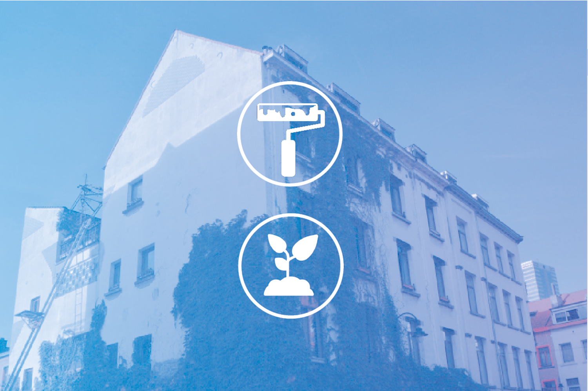

[English below]
CHANTIER DE PRINTEMPS / SPRING YARD WORK
weekend du 16 et 17 mars 2019
10h-18h

[FR] Le printemps approche et nous prévoyons plusieurs petits chantiers dans le bâtiment et aux alentours. Nous commencerons le weekend du 16-17 mars et comme nous sommes une petite équipe, quelques coups de mains seront très utiles. Amis, connus ou inconnus, soyez les bienvenus, car la meilleure façon de se rencontrer est de faire ensemble! Voici les quelques chantiers proposés : La cour : Nous allons la nettoyer, puis construire une petite agora et des bacs à plantes avec des matériaux récupérés. L'idée est d’aménager cette partie du lieu pour pouvoir vous y accueillir pendant les beaux jours avec des discussions, ateliers, performances, cuisine, etc. Le Trait - d'Union : Le petit magasin se transforme peu à peu en un projet ouvert, accueillant les initiatives citoyennes et les projets de recherche dans le quartier des Marolles. Nous souhaitons repeindre les murs, afin de créer un environnement plus neutre pour vos idées et vos rencontres. Le Réacteur : Nous allons mettre à la disposition de nos artistes une sorte de salle polyvalente, qui pourra servir de dressing, de coulisses, de loge, ou d’atelier temporaire. L’endroit existe déjà, mais il est rempli de meubles. Il faut donc transporter tous les bazars inutiles au sous-sol, aménager l’espace et monter une porte. A tous ceux qui se sentent motivés pour construire, démonter, planter, peindre, aménager, transporter, visser, dévisser, fabriquer, le tout dans l’apprentissage et la bonne humeur : vous êtes nos héros! Quand ? Samedi 16 et dimanche 17 mars 2019, briefing à 10h autour d’un bon café-biscuit, puis action. Où : Sur place, rue de l’Hectolitre 3, 1000 Bruxelles Combien de temps ? Une heure, une journée, ou tout le weekend, selon vos disponibilités (à indiquer ici : https://doodle.com/poll/h9weuy72hvu2929h) --- [EN] Springtime is approaching and we plan several works to do in the building and the yard. We will start on 16th and 17th of March and since we are a small team, some help will be very useful. Friends from everywhere, know or unknown, welcome, because, the best way to meet is by doing together! Our working tasks will be: Backyard: We are going to clean it and to build a small agora and boxes for outdoor plants, upcycling the material we already have. The idea is to activate this place during the warmer period of the year with discussions, presentations, performances, kitchen, etc. Trait - d'Union: The little shop transforms (little by little) into an open community project, hosting the citizen's initiatives and research projects in the neighborhood of Marolles. However, it would be nice to paint the walls, in order to achieve some more neutral environment for your ideas and encounters. Reactor: We are going to make a multifunctional room available for participating artists. It will be used as a dressing space/backstage or temporary workshop place. The perfect space exists already, but it is overcharged with furniture. We need to unload all unnecessary furniture to the basement, arrange the space and mount a door. If you are motivated to build, dismantle, plant, paint, arrange, transport, screw, unscrew, make, all that in learning and funny mood : you are our heroes! When? Saturday, March 16th and Sunday, March 17th, 2019, briefing at 10 am around a good coffee-biscuit, then action. Where: rue de l'Hectolitre 3, 1000 Brussels How long? One hour, one day, or the whole weekend, depending on your availability (that you can indicate here:https://doodle.com/poll/h9weuy72hvu2929h).